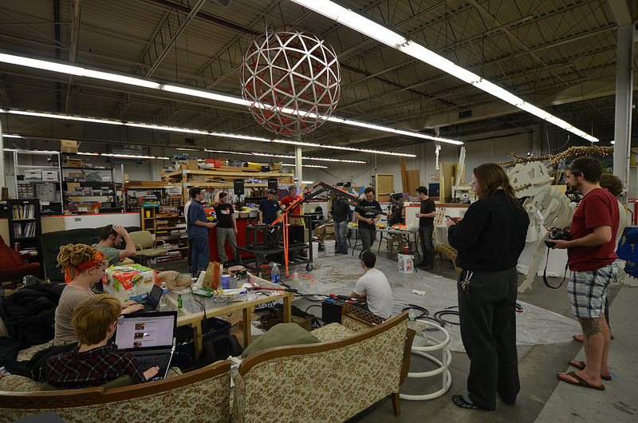

<h3> Philosophy </h3>
<p> The maker movement is a social movement with an artisan spirit. Maker culture emphasizes learning-through-doing (active learning) in a social environment. (Might not be a movement.)
<ul>
<li> Democratization of engineering tools: self-directed learning from youtube, reddit, online forums, etc. is an indespensable complement to having access to space and tools. </li>
<li> Encourage novel, cross-disciplinary applications of technologies. Personal fabrication drives innovation. </li>
<li> Production and consumption can be more distributed. (Personal fabrication breaks the equality that jobs = work = money = consumption.) </li>
<li> Personal production, not mass production. </li>
<li> Using the lab to make the lab: rapid prototyping of rapid prototyping. </li>
<li> Open access: after the course, you're encouraged to continue using the space! </li>
</ul></p>
<p> Types of making include amateur scientific equipment, biology, food and composting, clothes, musical intruments, vehicles/robots and tool making. </p>
<h3> Related Courses </h3>
<p> <ul>
<li> <a href="https://nathanmelenbrink.github.io/ps70/"></a> PHYSCI 70: Introduction to Digital Fabrication </li>
<li> <a href="https://nathanmelenbrink.github.io/intro-dig-fab/"></a> PHYS S-12 Introduction to Digital Fabrication </li>
<li> <a href="http://fab.cba.mit.edu/classes/863.18/">How To Make (Almost) Anything</a> </li>
<li> <a href="http://mtm.cba.mit.edu/">Machines That Make (Almost) Anything </a> </li>
<li> <a href="http://fabacademy.org/">Fab Academy</a> </li>
</ul> </p>
<h3> Common Principles </h3>
<p><ul>
<li>Community Learning.</li>
<li>Personal Fabrication.</li>
<li>Skill Integration.</li>
<li>Documentation.</li>
</ul></p>
<h3>Example Final Projects </h3> <br> <br>
<!-- <img src='./organ.png' alt='screambody'><br>
<p><a href="https://web.media.mit.edu/~monster/screambody/">ScreamBody</a>, Kelly Dobson 2004. </p>
<iframe width="720" height="405" src="https://www.youtube.com/embed/6Zrpd9Gwr50" frameborder="0" allow="accelerometer; autoplay; encrypted-media; gyroscope; picture-in-picture" allowfullscreen></iframe>
<p><a href='http://fab.cba.mit.edu/classes/863.14/people/andrew_mao/project/'>Press-Fit Go-Kart</a>, Andrew Mao 2014. </p>
-->
<iframe width="955" height="541" src="https://www.youtube.com/embed/xMw1Uj4MwNo" frameborder="0" allow="accelerometer; autoplay; encrypted-media; gyroscope; picture-in-picture" allowfullscreen></iframe>
<p> <a href='http://fab.cba.mit.edu/classes/863.14/people/nathan_melenbrink/Week_15.html'>Wall Plotter</a>, Nathan Melenbrink 2014. </p>
<!-- <img src="http://fab.cba.mit.edu/classes/863.13/people/robert.hart/Final%20Presentation/Final_Spinner13.jpg"><br>
<p><a href="http://fab.cba.mit.edu/classes/863.13/people/robert.hart/Final%20Presentation/RobertHartFinal.html">The portable electric handpsinning machine</a>, Rob Hart 2013. </p> -->
<!-- - [Samantha](https://samjo4788.github.io/PHYSCI-70/FinalProject/indexFP.html)
- [Andrew](https://aspartate.github.io/personal_website/blog/avatarm/)
-->
<iframe width="955" height="541" title="vimeo-player" src="https://player.vimeo.com/video/82073250" frameborder="0" allowfullscreen></iframe>
<p><a href='http://fab.cba.mit.edu/classes/863.13/people/Jonathan_Grinham/index.html'>MOSS PAD</a>, Jonathan Grinham 2013. </p>
<iframe width="955" height="541" src="https://www.youtube.com/embed/zyBvk2VtEa8" title="YouTube video player" frameborder="0" allow="accelerometer; autoplay; clipboard-write; encrypted-media; gyroscope; picture-in-picture" allowfullscreen></iframe>
<p><a href='https://tomkinsc.github.io/harvard-ps70/2020-05-14/'>Smart Chef Knife</a>, Chris Tomkins-Tinch 2020. </p>
<iframe width="955" height="541" src="https://www.youtube.com/embed/fKCS6ebLzv4" title="YouTube video player" frameborder="0" allow="accelerometer; autoplay; clipboard-write; encrypted-media; gyroscope; picture-in-picture" allowfullscreen></iframe>
<p><a href='https://aspartate.github.io/personal_website/blog/avatarm/'>AvatArm</a>, Andrew Zhang 2021. </p>
<iframe width="955" height="541" src="https://www.youtube.com/embed/pkDFMg0sEoE" title="YouTube video player" frameborder="0" allow="accelerometer; autoplay; clipboard-write; encrypted-media; gyroscope; picture-in-picture" allowfullscreen></iframe>
<p><a href='https://samjo4788.github.io/PHYSCI-70/FinalProject/indexFP.html'>DanceGlove</a>, Samantha Jones 2021. </p>
[Bobby McCarthy](https://bobbymmccarthy.github.io/ps70/finalProject.html), 2023
[Jackson Moody](https://jacksonmoody.github.io/PS70/finalproject), 2023
[David Brown](https://davidb8.github.io/PS70/final_project.html), 2023
[Noa Choi](https://nchoi22.github.io/ps70/15_finalproject/index.html), 2023
<iframe width="955" height="541" src="https://www.youtube.com/embed/CHDSnCLrz1Q" title="Blocky Coding" frameborder="0" allow="accelerometer; autoplay; clipboard-write; encrypted-media; gyroscope; picture-in-picture; web-share" allowfullscreen></iframe>
[Connor Leggett](https://cjleggett.github.io/ps70/weeks/final.html), 2023
<!-- <h3> Projects with connections to our lab </h3> -->
<p> <a href="https://www.thereadread.com/">The Read Read - device to teach reading to the blind.</a> </p>
<video width="955" height="541" controls>
<source src="https://cdn.shopify.com/s/files/1/0045/0225/7757/files/MOON_Epic_Video_BG_v2.mp4?8923748943239564712" type="video/mp4">
</video>
<p>Moon, Dixon Magister Yang 2017. </p>
<h3> Terminology </h3>
<p> (We don't have strong feelings about these labels, but other folks might.)
<ul>
<li> <b> Makerspace:</b> a community-operated, often non-profit workspace where people with common interests, such as computers, machining, technology, science, digital art, or electronic art, can meet, socialize and collaborate. </li>
<li> <b> Fab Lab:</b> a small-scale workshop offering (personal) digital fabrication, organized by MIT's Center for Bits and Atoms </li>
</ul></p>
<p> Other relevant concepts include
<a href='https://en.wikipedia.org/wiki/Free_and_open-source_software' >Free and open-source software</a>,
<a href='https://en.wikipedia.org/wiki/Open-design_movement' >Open design movement</a>,
<a href='https://en.wikipedia.org/wiki/Maker_Faire' >Maker Faires</a>,
<a href='https://en.wikipedia.org/wiki/Make_(magazine)' >Makezine</a>,
<a href='https://en.wikipedia.org/wiki/Open_Source_Ecology' >Open source ecology</a>,
</p>
<h3> Global Impact </h3>
<p>
<ul>
<li><a href='https://fab.city/#fabcity-challenge' >Fab City</a> commitment to universal access to digital fabrication </li>
<li><a href='https://www.govtrack.us/congress/bills/116/s2195' >US Bill S. 2195: National Fab Lab Network Act of 2019</a> </li>
<li><a href="http://fabacademy.org/">Fab Academy</a> </li>
<li> In addition to the Fab Lab network, many other centers are pursuing similar goals around the world, including our neighbors <a href="https://artisansasylum.com/">Artisan's Asylum</a>. </li>
</ul></p>

<p> <a href="https://artisansasylum.com/">Artisan's Asylum</a> </p>